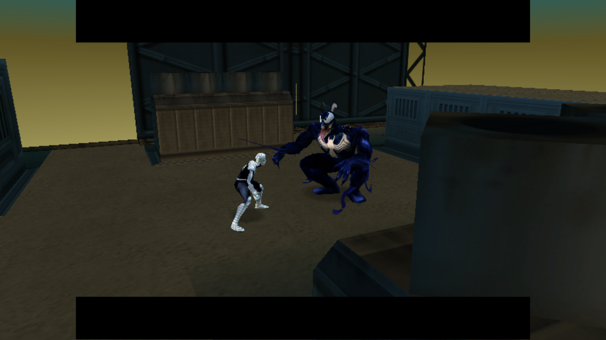

The weekends were everything that I looked forward to. It's hard to image the bussling city streets.
I only played during the mornings, never at night. I had auto-ajusted the balance of my chores, and responsibilities
in order to make the most out of every weekend. Optimizing my time despite the ongoing commotion of every night's barbaric
neighbors with alcohol and piss-poor judgement. Try it today, they'll do the same thing. Get drunk and blame you for everything.
Luckily I was young enough to warrant some time for myself. The level was just so vivid. The yellow hue. Falling into the pool of
yellow clouds, seemingly intentionally. The red "retry" text. "I hadn't died?". It's such a perplexing idea anyway you look at it.
simulating death in mexico while I am trying to chase Venom down. "So bring it on!" the voice echoing in my mind.
Venom's special effect always caught my attention. It was so abstract. The symbiote is almost trying to escape Eddie Brock.
"No one can control the symbiote, NO ONE". Which of course made me think, "I want to control the symbiote" in my very small and
inexperienced manner.

The feeling was very freeing. Swinging felt seamless, the tension was just right. I tried it in 'Normal' just to make sure I was actually that good at beating the level. Seeing them get into the building and the random voice lines that repeated. That exposure made me peer into the world of game development. "It repeated" I thought to myself. Was that by mistake? The rest of the game seemed flawless so I shoved it off as gaming stuff. It felt earned. It made Venom seem that more interesting. You wouldn't just face him, but having to catch up and race him under his somewhat challenging or unforgivable pace-lends itself to the menacing upper-hand Eddie Brock has by taunting Spiderman's true identity and setting the course of the battle between two unlikely allies.